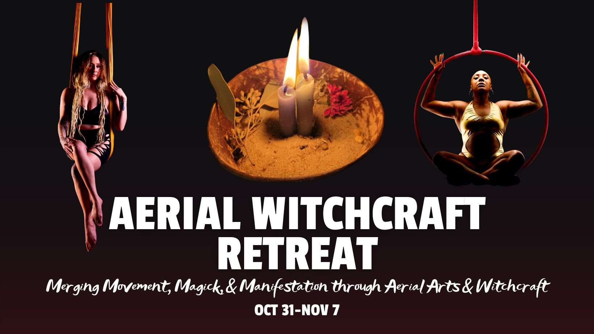

Retreats, workshops, and local gatherings — some hosted by Sovay, some simply loved and recommended. Details on how to get involved with each are below.

Sovay is teaching a week-long retreat merging aerial arts and modern witchcraft at Casa Chango, an eco-retreat center in Puerto Escondido, Mexico, run by Sweet Retreats. Mornings are spent on the fundamentals of modern paganism, afternoons on aerial hoop and hammock sequences built around each day's theme, and evenings bring movement and magick together through ritual.
The retreat falls during Samhain, Dia de los Muertos, and Halloween, and weaves all three traditions together — including a collective ancestor ofrenda guided by a local community member and a closing Samhain working. Meals, accommodations, daily classes, and use of the property's pool, circus gym, and hiking trail are included. At least a year of consistent aerial practice on hoop or hammock is recommended.
An informal coven that has been meeting together for about three years, gathering around each full moon and celebrating all eight Sabbats across the wheel of the year. Locations shift — sometimes on the beach, sometimes at one of our homes.
These gatherings are free to attend but aren't open to strangers. If you're a pagan in the Virginia Beach area looking for a local witchcraft community, reach out by email — Sovay would love to get to know you first, and is always happy to consider new members.
A workshop connecting aerial practice to witchcraft and magick, built for aerial studios that want to offer something beyond a standard class. Sovay teaches a sequence and tying pattern, links it to ritual and magical practice, and closes the three hours with a group working.
The content can be tailored to what a studio is looking for. If you'd like to bring this workshop to your space, reach out for more information.
Rooted is a spiritual gathering that meets in person in Chesapeake, VA on Sunday evenings around the new moon, during the summer months. Sovay doesn't run this group, but attends frequently and recommends it warmly — it's a positive, welcoming pagan community.
If you're local to the Virginia Beach area and looking for a spiritual gathering to join, this is a good one. Reach out to Sovay for more information about Rooted.